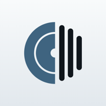
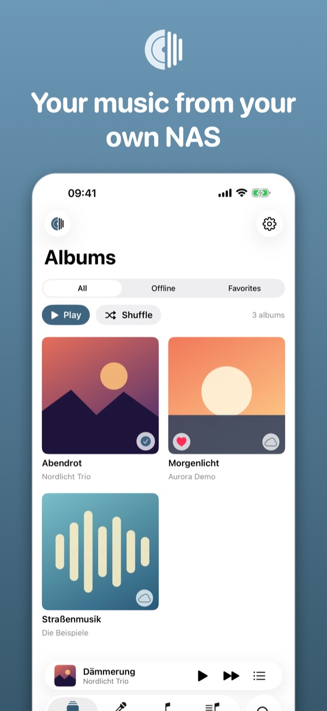
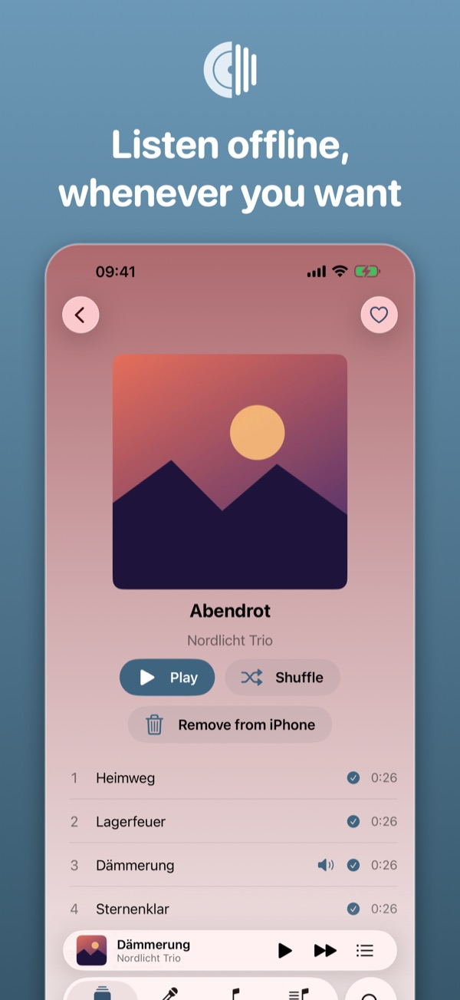
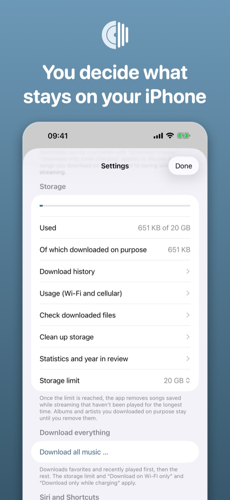
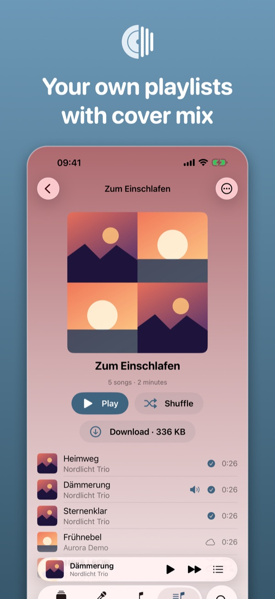
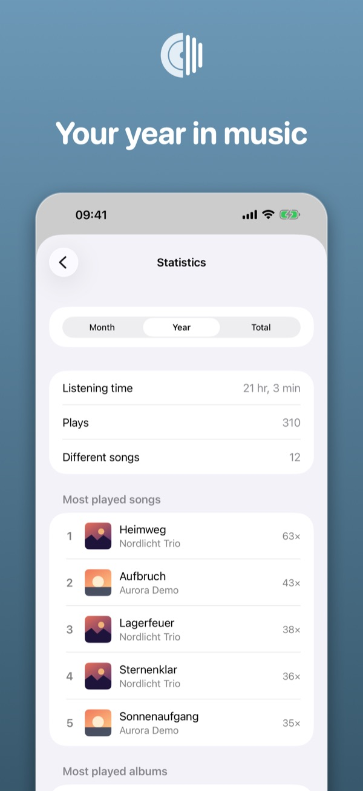
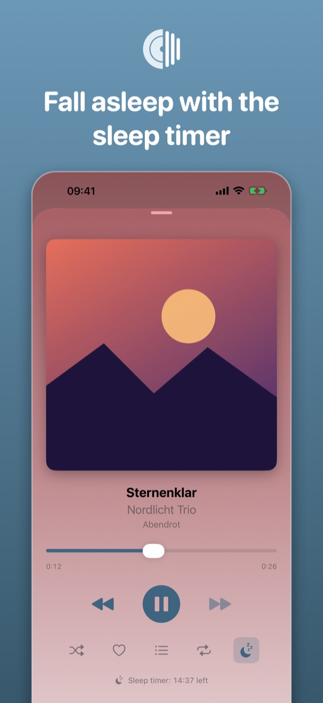
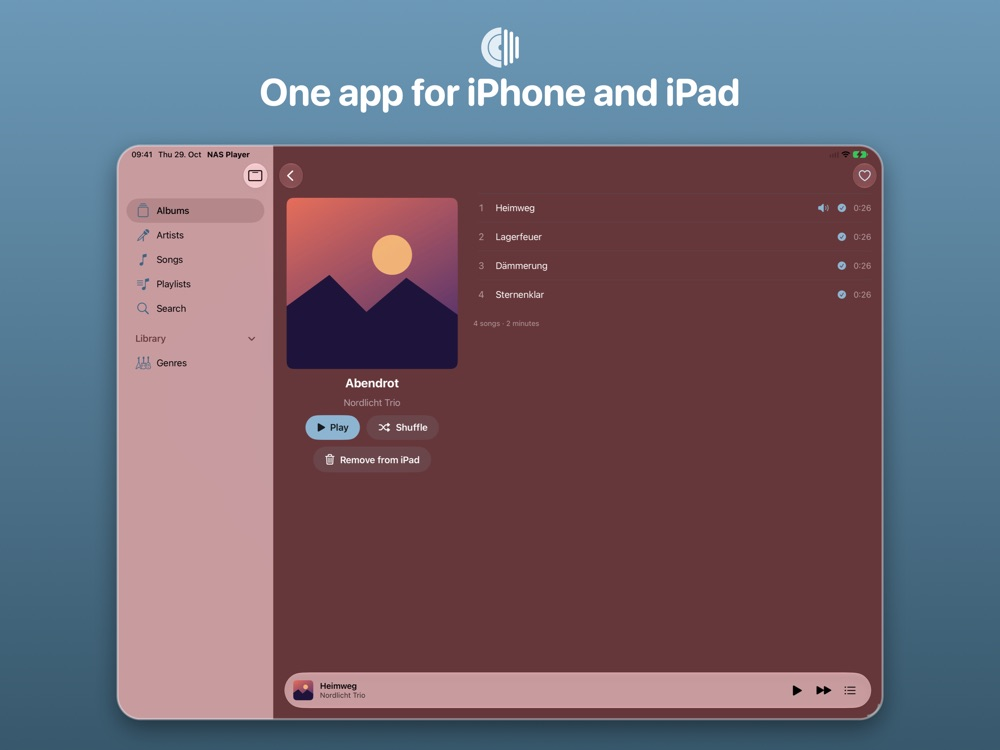
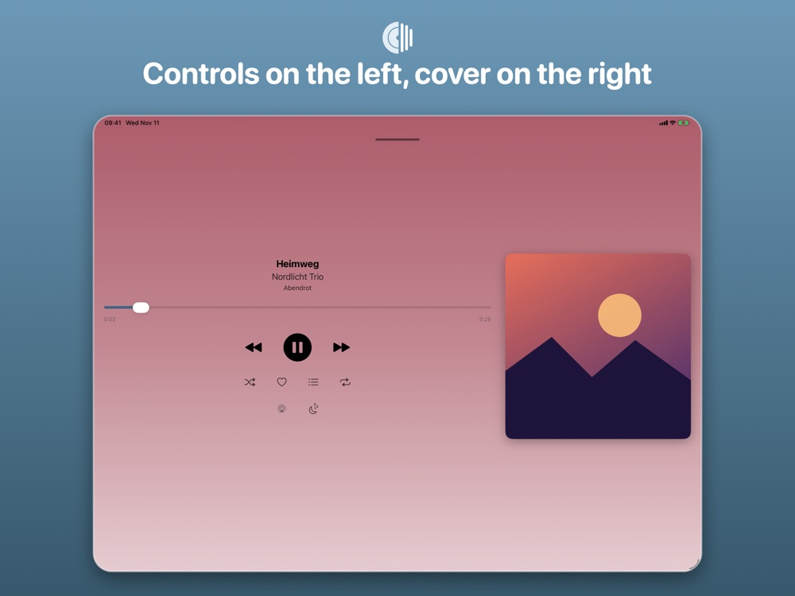
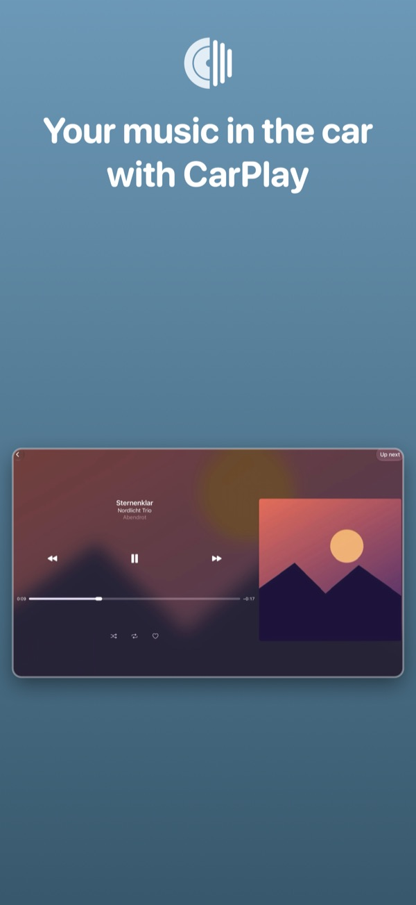

NAS Player
Synology music in CarPlay, offline and without a subscription.
Download on the App StoreFree · no in-app purchases
Preview
Album overview, offline downloads, storage, playlists, statistics, and sleep timer on iPhone.
One app for iPhone and iPad: sidebar, two-column album page, and a player with controls on the left and cover on the right.
Pick from Home, Library, playlists, and genres right in the car.









CarPlay with selection
Home with recently played albums and favorites, Library with cover mix, playlists, and genres. You choose right in the car.
Offline, in your control
Download albums and artists on purpose, with the size shown up front and a storage limit. Downloads keep running in the background.
Private and free
No accounts, no ads, no tracking. The password stays in the keychain, and the connection goes only to your NAS.
Description
NAS Player plays the music on your Synology NAS: on iPhone and iPad, on the go, offline, and in the car with CarPlay.
Stream your whole library with covers and search, download albums on purpose, mark favorites, and control it all with Siri and Shortcuts.
What the app does
- Browse and stream your whole library without downloading everything
- Download albums, artists, and songs to the iPhone on purpose (with size display and storage limit)
- Favorites, up next, shuffle, and repeat; genres and multi-disc albums
- CarPlay with Home, library grid, playlists, and an offline notice
- Siri and Shortcuts: “Play my favorites with NAS Player” (all commands)
- Demo mode with sample music, no NAS needed
- No advertising, no tracking, no accounts
- Sync favorites with your NAS (optional), AirPlay, lyrics, and speed for audiobooks
Requirement
A Synology NAS with Audio Station that can be reached at an https address with a valid certificate or through QuickConnect. Without a NAS you can try the app in demo mode.